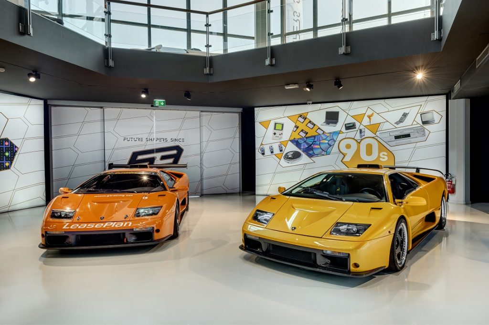

Museo Lamborghini
El interior del Museo Automobili Lamborghini cuenta la historia de sesenta años de innovación que proyectan a Lamborghini hacia el futuro, reflejando no solo su fascinante historia sino también su compromiso continuo con la vanguardia automotriz. Este museo ofrece a los visitantes una mirada íntima a los icónicos modelos que han definido la marca, junto con la oportunidad de recorrer las líneas de producción, lo que permite entender mejor el proceso detrás de la creación de estos vehículos legendarios.
Desde las primeras creaciones visionarias del genio Ferruccio Lamborghini, como el revolucionario Miura y el audaz Countach, el museo recorre un viaje que incluye los superdeportivos más recientes y exclusivos, como el Huracán Performante y el Aventador SVJ. Además, se destacan los modelos "few-off" como el Centenario, el Sesto Elemento y el Veneno, que representan la máxima expresión de exclusividad y rendimiento en la historia de la marca. La exposición también abarca la evolución hacia la tecnología híbrida, con modelos pioneros como el Sián y el Countach LP 800-4.
El Museo Automobili Lamborghini no solo es un lugar de exhibición, sino que también ofrece una experiencia interactiva única. Entre sus atracciones, destaca un nuevo simulador de conducción, que permite a los visitantes experimentar la emoción y el descubrimiento de los vehículos en exposición de manera inmersiva y realista.
